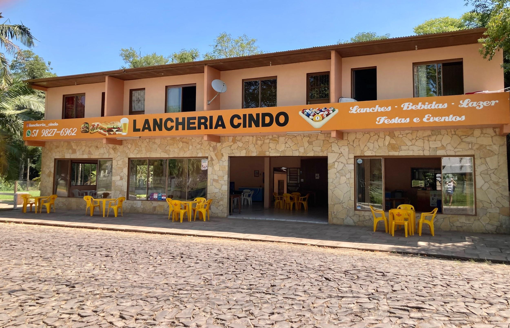
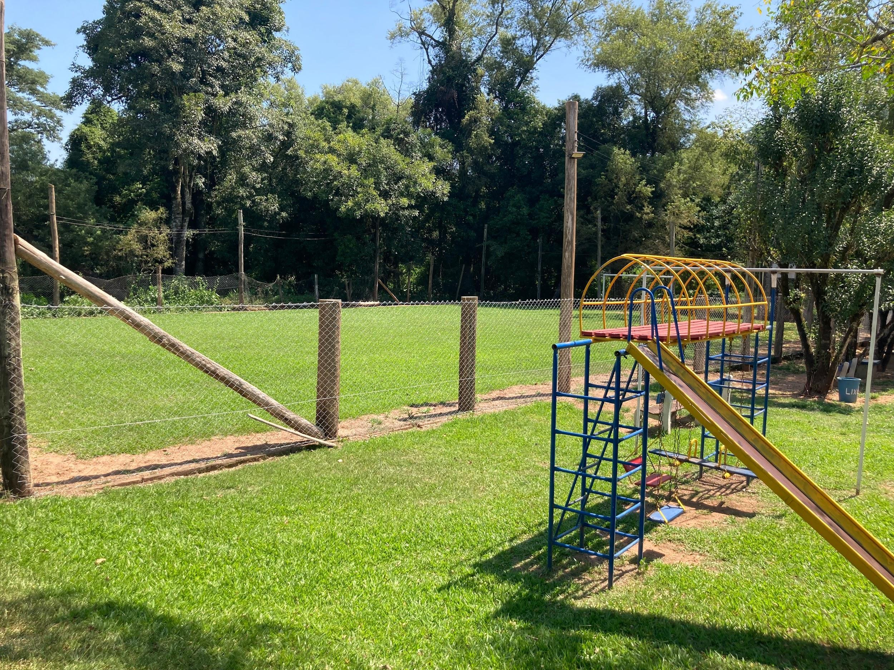

A Lancheria Cindo, localizada na Estr. Taquara-Padilha, é um destino
imperdível para aqueles que buscam uma deliciosos lanches em um ambiente de
entretenimento. Este estabelecimento proporciona uma experiência completa, com
um campinho de futebol, uma pracinha para crianças se divertirem e até mesmo a
possibilidade de acampar para aqueles que desejam passar a noite no local. Ideal
para momentos de diversão em família e encontros com amigos, sua localização ao
lado do rio proporciona uma atmosfera serena e natural.

 - fundo verde.png)